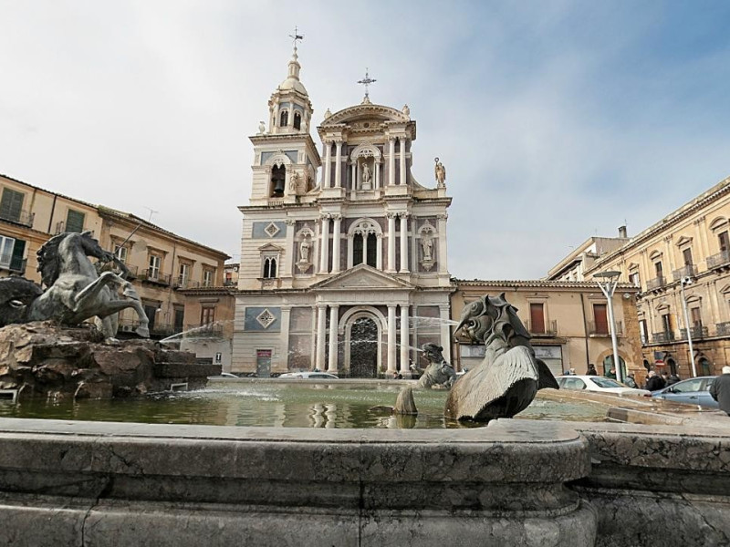

Piazza Giuseppe Garibaldi
Provincia di Caltanissetta

Contesto Urbano ed Evoluzione
Collocata nell'esatto punto di intersezione delle due vie principali della città, Corso Umberto I e Corso Vittorio Emanuele, Piazza Giuseppe Garibaldi è il centro geometrico di Caltanissetta. La motivazione della sua selezione è legata proprio a questo ruolo urbanistico di "ombelico" cittadino, capace di riassumere la storia nissena e dividere in modo ortogonale l'abitato nei suoi quattro quartieri storici.
La piazza si presenta come un quadrilatero regolare dominato al centro dalla monumentale Fontana del Tritone, opera in bronzo dello scultore Michele Tripisciano che conferisce un gioco d'acqua allo spazio.
Attorno alla piazza si dispongono i massimi simboli architettonici della comunità: la Cattedrale di Santa Maria la Nova, con la sua facciata tardo-rinascimentale, e il Palazzo del Carmine, antico monastero oggi sede del Municipio.
Il ruolo sociale della piazza funge da palcoscenico principale per le storiche processioni della Settimana Santa nissena (come la sfilata delle grandi "Vare") ed è il luogo d'incontro quotidiano prediletto per il passeggio della cittadinanza.